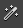
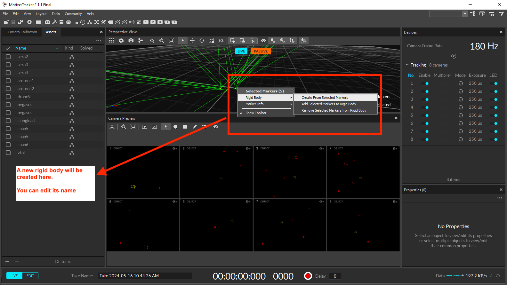

Taguspark Flight Arena
The Taguspark flight arena is an indoor space, under the administration of the ISR-Lisbon, which features an OptiTrack Motion Capture System (MCS). The MCS consists of 8 cameras that are mounted on the ceiling of the arena and is used to track the position and orientation of rigid bodies equipped with reflective markers. A dedicated computer streams the obtained data into a computer network. The arena dimensions are 7.0 x 4.0 x 2.5 m.

Here we describe the setup and calibration procedures for the OptiTrack MCS.
Setting up Optitrack with Motive
Turn on the OptiTrack cameras, the arena computer and router. Get also the calibration tools ready.
Launch the Motive application from the Windows desktop.
{kind=link}
Open the Camera Calibration pane  and click on
Clear Maskfollowed byMask Visibleto mask all the bright spots in the arena that can be mistakenly identified as passive markers.Start the calibration process by clicking on
Start Wanding.Enter the arena with the calibration wand in hand and wave it around the arena. Make sure that the LED indicator ring of all cameras is completely filled in green.
Click on
Calculatefollowed byApplyand wait for the Calibration Result Report window to pop up.Check the Calibration Result Report. If it reports an Excellent or Exceptional calibration result, press
Apply. Else, pressCanceland repeat the wanding process.Place the calibration square in the center of the arena, with the shorter leg pointing towards the windows.
{kind=link}
{kind=link}
{kind=link}
{kind=link}
{kind=link}
{kind=link}
Have in mind that the motion data captured from the MCS is expressed in an East North Up (ENU) inertial frame, which is the standard in the ROS representation. The mavlink interface converts this data to a North East Down (NED) inertial frame with the attitude following the Front Right Down (FRD) of the rigid body.
Open the Ground Plane tab of the Camera Calibration pane and click on
Set Ground Planeto finish the calibration process.
{kind=link}
You can save your calibration file for later use. It can be used during multiple consective days of experiments in the arena. However, the calibration accuracy naturally deteriorates over time due to ambient factors, such as fluctuations in temperature. You should re-calibrate the MCS on a weekly basis.
Take the calibration square out of the arena and place your vehicle inside the arena with its front pointing towards the windows. Select the group of markers you see on screen at once and check if all the markers placed on your vehicle are detected.
{kind=link}
Create a rigid body from the selected markers by right-clicking over them and choosing the
Rigid Bodyfollowed byCreate From Selected Markers. On the Assets pane , you should see the newly created rigid body.
{kind=link}